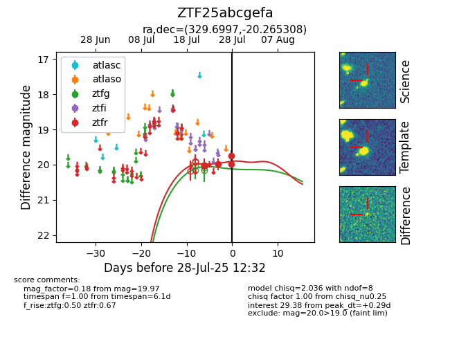

Target ZTF25abcgefa at 2025-07-28 12:32, see:
FINK: fink-portal.org/ZTF25abcgefa
Lasair: lasair-ztf.lsst.ac.uk/objects/ZTF25abcgefa
ALeRCE: alerce.online/object/ZTF25abcgefa
alt names
ZTF25abcgefa (ztf,fink)
coordinates:
equatorial (ra, dec) = (329.6997,-20.26531)
galactic (l, b) = (33.2681,-50.08105)
photometry
last ztfg=20.02, ztfr=19.97
1 ztfg, 4 ztfr detections
